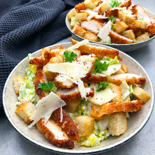

Pure
Greens
Club
Hjem
Madplaner
Opskrifter
Tilbudsavis
Information
Kontakt
Frokost
CÆSAR SALAT MED CRISPY CHICKEN

CÆSARSALAT MED CRISPY CHICKEN
Antal: 2 Personer
Tid: 25 minutter
INGREDIENSLISTE
Cæsar dressing
50 g. mayonnaise
0,5 fed hvidløg
0,5 tsk. dijonsennep
1,5 spsk. citronsaft
80 g. cream fraiche
salt/peber
Andet
2 stk. hjertesalat
20 g. parmesan
50 g. brødcroutoner
Crispy chicken
300 g. kyllingebryst
30 g. pankorasp
1 stk. æg
salt
1,5 dl. raps eller solsikkeolie